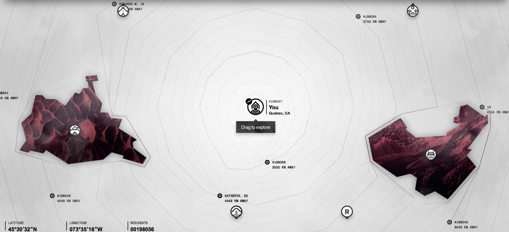

OCTAVE is a social experiment that explores human relations through the use of music and links users based on the content of their musical creations.
Music holds a very important place in the vast majority of humans and has done so for most of its existence. The XXth century brought a new wave of musical genres that have expanded and evolved into more sub-genres that we could ever imagine. I have been playing guitar for 10 years but throughout my life I have come across very few people that actually like and play the same style as I do. With the explosion of social media and the creation of groups and apps that link people together it has become easier to find people with the same interest as ourselves.
OCTAVE focuses in linking musicians together. The way it works is simple. In the website, you can create or record a simple piece of one minute or less, this piece should be able to identify you as it will serve as your “profile soundtrack”. The notes are then analysed and based on the frequency of the piece, it is then submitted and saved. You will then be taken to ain interactive map, you can see who is creating music similar to yours based on how similar your sound frequency is to others.
It is up to you to make contact with them and start creating content together.

SIGNIFICANCE
This project has a special meaning because it is a stepping stone towards creating greater musical connections with others. As a musician who is interested in more obscure musical styles, I always found it hard to find people who were into the same chanel. OCTAVE could become that missing link between a bedroom musician and a collaboration that could change the world. This project could become important for the person that is trying to put his music out there as well. OCTAVE is about leaving your mark and let your mark take you places based on the relationships you can make out of it.
From a technical point of view, this project is very important for my development and learning of the concepts and programming languages learnt throughout the semester. It creates a challenging process that should help improve my understanding and implementation of Javascript, JSON and AJAX.
Although there are applications and websites already that help link people together like Tinder, Reddit or even Facebook and Instagram, only Vampr has reached the musicians market, however it fails to deliver a more personal presentation of the user. The whole idea behind OCTAVE is to make your sound, YOUR sound, something that will set you apart and will draw people with similar musical ideas to you.
As mentioned before, what makes OCTAVE particular is the idea behind personalization. Although, the concept and implementation are very basic in nature, the challenge of creating a short piece that encompasses your personal sound gives the piece a sense of importance and uniqueness and creates an original concept that can be used to develop artistic relations between people.